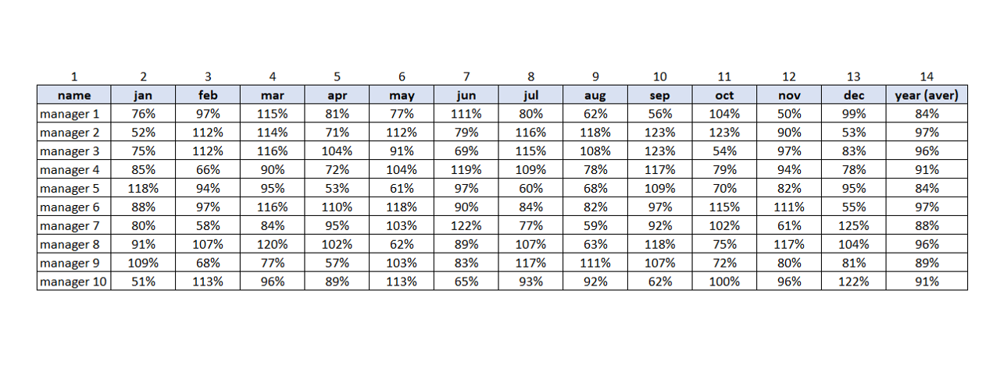
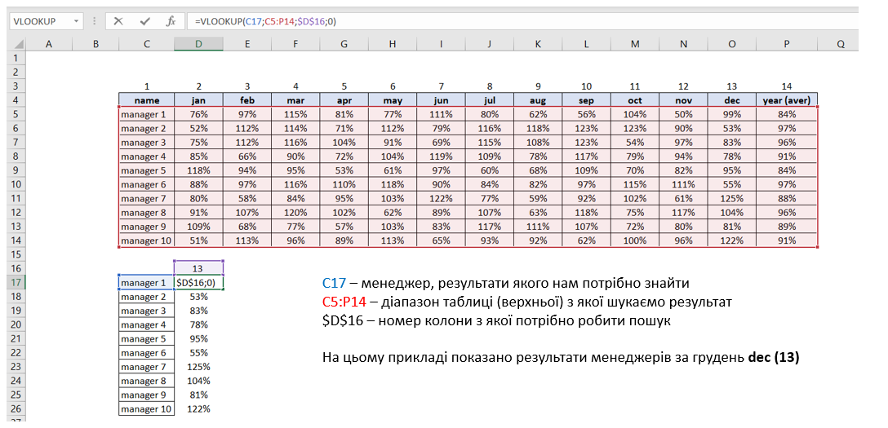
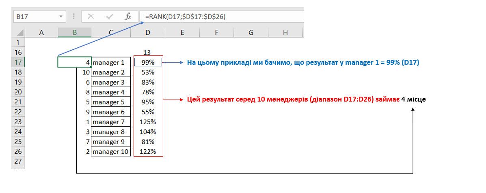
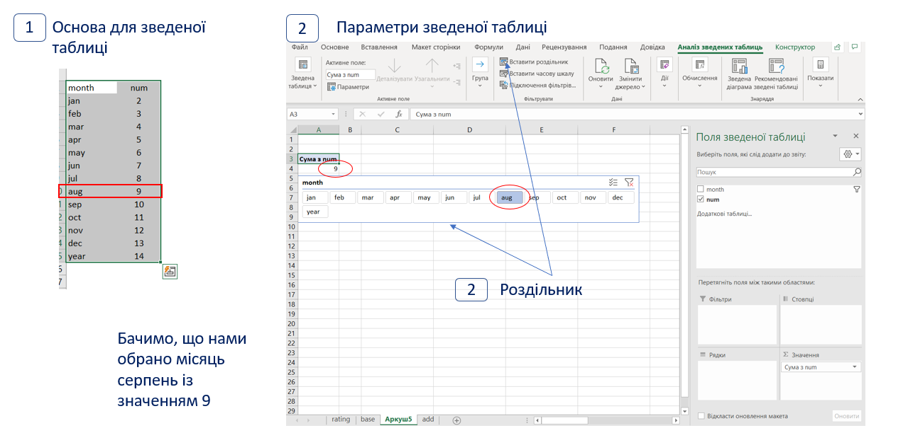
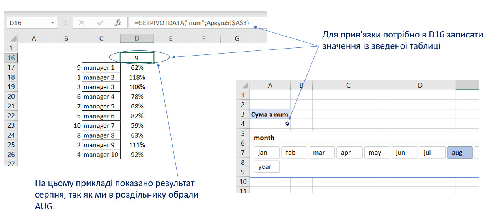
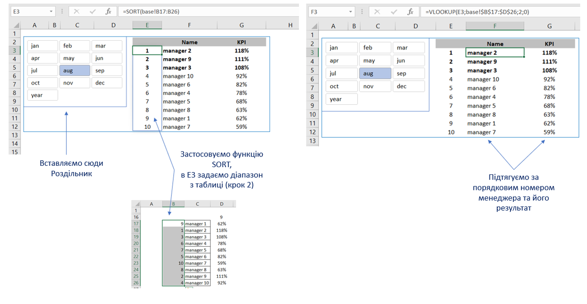

Припустимо у вас є таблиця з результатами виконання КРІ
менеджерами за кожен місяць, на основі якої накопичувальним підсумком потрібно показувати, яке
місце в рейтингу займає кожен з менеджерів в тому чи іншому місяці. Нижче приклад такої таблиці.

КРОК 1. Робимо окрему таблицю, в які буде відображатись лише потрібний нам період.
Для цього використовуємо функцію VLOOKUP.

КРОК 2. Вираховуємо місце менеджера в рейтингу. Для цього використовуємо функцію
RANK. Ця функція відображає порядковий номер найбільшого числа із заданого діапазону чисел.

КРОК 3. Робимо зведену таблицю (з Роздільником) для обрання потрібного нам періоду.
Зведену таблицю робимо на основі двох колонок, 1-ша колонка місяці (month), 2-га колонка (num)
це порядковий номер колонок з базової таблиці (з кроку 1).

КРОК 4. Прив’язуємо нашу таблицю з місцем менеджера в рейтингу (крок 2) до
роздільника (крок 3). Для цього потрібно у нашу формулу VLOOKUP, змінити визначення номеру
потрібної нам колонки.

КРОК 5. Сортуємо на окремому аркуші менеджерів за обраний період. Для цього нам
потрібно перенести (скопіювати) роздільник та використати функцію SORT.

Коротка відео-інструція до цієї статті:
Сподіваємось, що на основі такого прикладу ви зможете налаштувати потрібні
вам формати звітів.
Опубліковано 6-29-2021